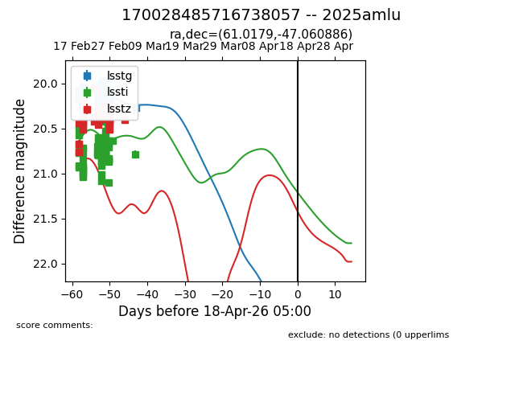
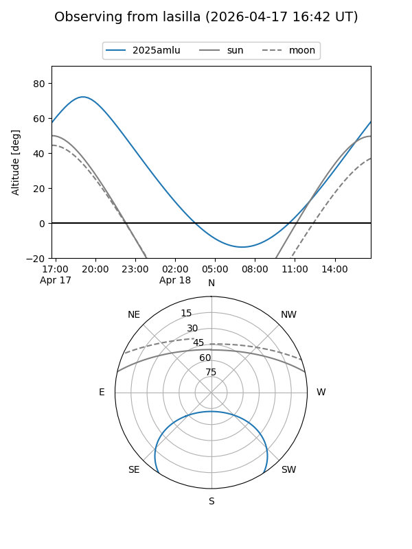
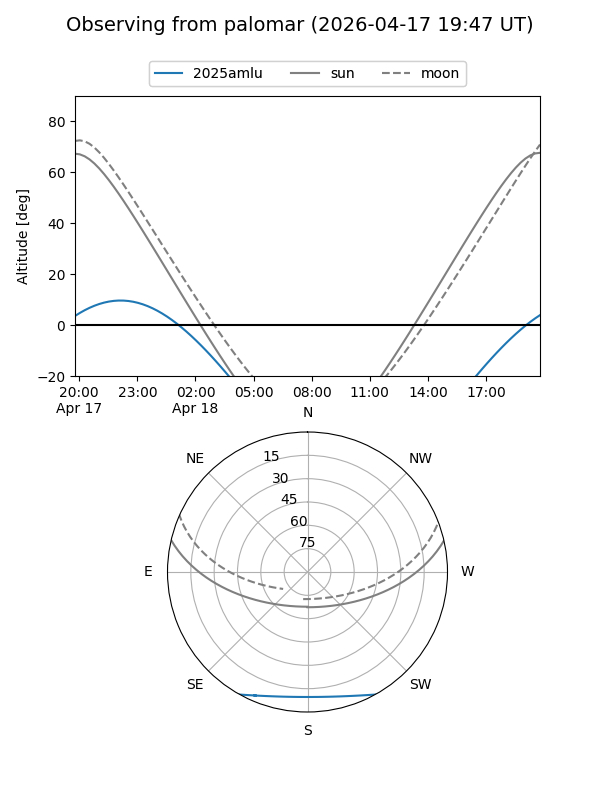
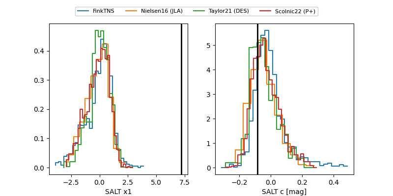

2025amlu
Target 2025amlu at 2026-04-18 05:05
Aliases and brokers:
TNS: link
YSE: link
alt names
170028485716738057 (lsst,fink_lsst)
2025amlu (tns,yse)
Coordinates:
equatorial (ra, dec) = 61.0179,-47.06089
equatorial (HMS+DMS) = 04:04:04.30,-47:03:39.19
galactic (l, b) = (254.1348,-47.58237)
Flags:
Photometry:
last lsstg=20.27, lssti=20.78, lsstz=20.40
54 lsstg, 53 lssti, 38 lsstz detections
Lightcurve

Visibility


Additional plots
